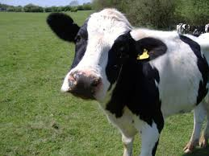
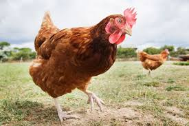

The Bean Truck!
Beans are good food!
Our Mission
Across the globe, humble legumes of every color and size: from black turtle beans to white cannellinis, from tiny red lentils to giant cranberry beans, form the basis of classic, nourishing food enjoyed by rich and poor alike. The Bean Truck strives to bring these dishes to life for Philadelphia!

We're based on a simple philosophy: that healthy, tasty food can be affordable and fun! We draw on cuisines from around the world to make protein-rich, hearty soups, stews, sandwiches and more. Our beans and vegetables are all organic, and locally sourced whereever possible. We get our eggs from the Lancaster Free Range Chicken Coop. Pork is from Ithaca, New York's Piggery.
 The next time you need a real meal, made from fresh and local ingredients, look for the Bean Truck on a street near you!